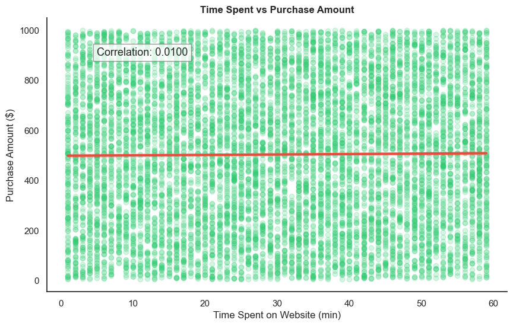
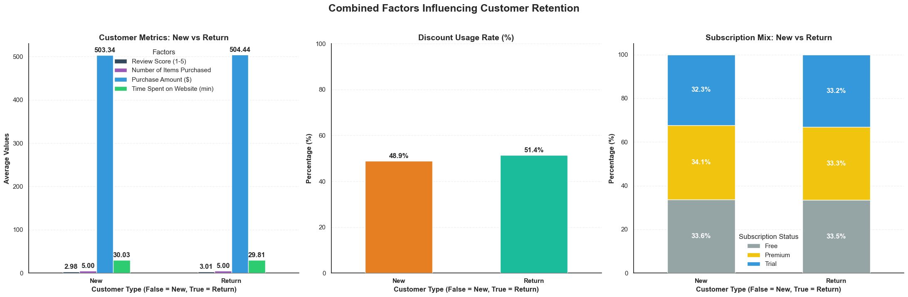
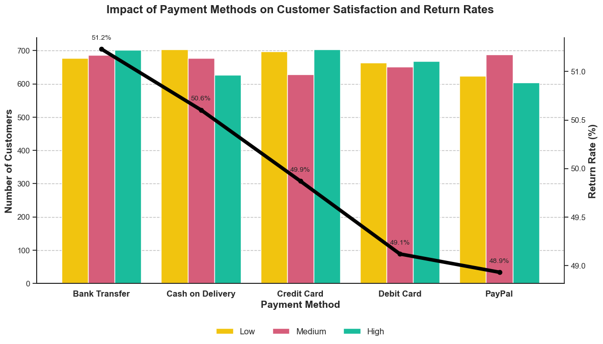
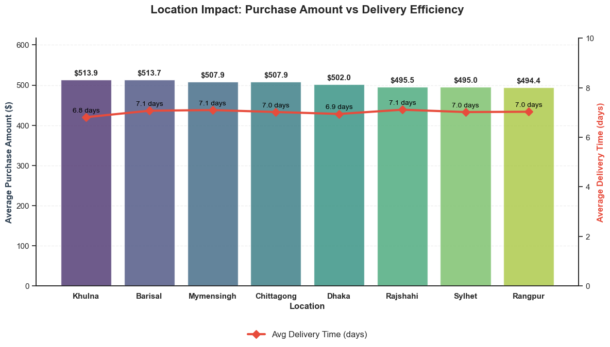

Uncovering E-commerce Customer Behavior
Analyzed a 10,000+ record e-commerce dataset through data preprocessing, Exploratory Data Analysis (EDA), and visualization to uncover key patterns that drive strategic business decisions.
The Objective
E-commerce businesses need to understand what drives customer retention and high-value transactions. The goal was to move beyond surface-level metrics and identify the underlying behavioral patterns of new vs. returning customers, subscription impact, and regional performance.
My Approach
- Data Preprocessing: Handled missing values and standardized data types using Pandas.
- Structured EDA: Answered 15 targeted business questions across 3 analytical levels (Basic, Intermediate, Critical Thinking).
- Visualization: Generated 12+ intuitive graphs using Matplotlib/Seaborn to communicate findings effectively.
Featured Visualizations
Highlighting the most critical insights from the analysis. These visualizations represent the core findings that drive business strategy.

Intent-Driven Shopping Behavior
Correlation between time spent on site and purchase amount is near zero (0.01). Customers are purpose-driven, not browsers. Mobile UX optimization is more valuable than engagement features.

Drivers of Customer Retention
Multi-panel analysis reveals that satisfaction and subscription status drive loyalty significantly more than discounts (48.9% vs 51.4% usage rate).

Payment Methods & Return Rates
Bank Transfer users show the highest return rate (51.2%) while PayPal shows the lowest (48.9%), suggesting payment experience directly impacts satisfaction.

Location: Purchase vs Delivery
Dual-axis analysis shows Khulna leads in purchase amount ($513.9) with the fastest delivery (6.8 days), proving logistics efficiency drives high-value sales.
4 L3Q4: Major Insights Synthesis
Intent-Driven Shopping Behavior
The near-zero correlation (0.01) between time spent and purchase amount reveals customers are purpose-driven, not browsers. Mobile UX optimization is more valuable than engagement features.
Satisfaction > Discounts for Retention
Discount usage is nearly equal (48.9% vs 51.4%) between new and return customers, proving that satisfaction and subscription status drive loyalty more than price incentives.
Regional Performance Gaps
Khulna and Barisal show highest purchase values but delivery times vary (6.8-7.1 days). Optimizing logistics in high-value regions can directly boost retention.
Payment Method Patterns
Bank Transfer users show highest return rates (51.2%) despite being the most common payment method. PayPal users show lowest return rates (48.9%), suggesting payment experience impacts satisfaction.
Strategic Business Recommendations
Faster Premium Delivery
Introduce expedited shipping exclusively for Premium subscribers to close the value gap.
Optimize Regional Logistics
Focus supply chain improvements in high-value regions like Barisal and Khulna.
Convert 3-Star Reviewers
Implement targeted follow-ups to turn neutral (3-star) reviewers into 5-star advocates.
Improve Mobile UX
Streamline product discovery on mobile to cater to intent-driven, quick shoppers.